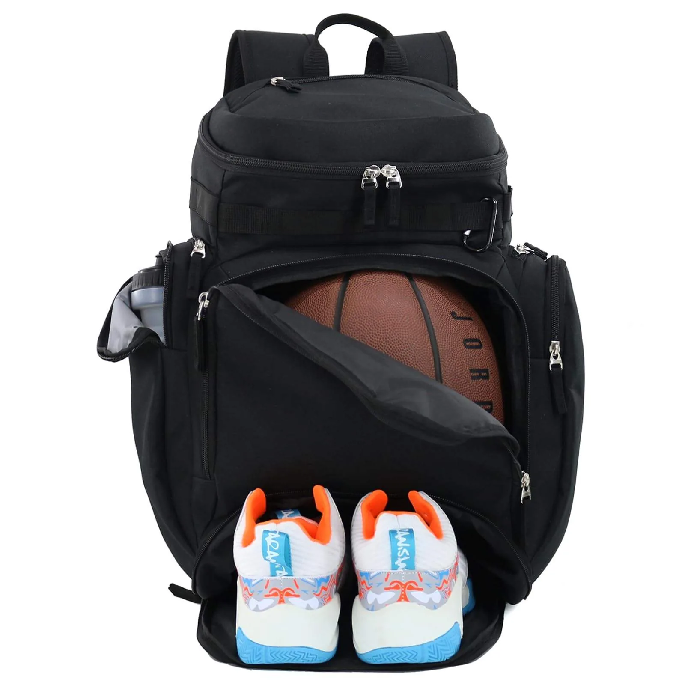

O tecido define quase tudo em uma mochila: aparência, toque, resistência, comportamento na personalização e custo. Este guia compara os materiais que mais usamos na produção B2B — com os pontos fortes e os cuidados de cada um.
Nylon 600D — o padrão do mercado
Resistente à abrasão, leve e com boa repelência à água, o nylon 600D (e as variações 420D/900D) é o tecido mais usado em mochilas urbanas, escolares e esportivas. Aceita bem silk e bordado. Melhor uso: mochilas de uso diário e linhas com bom equilíbrio entre custo e durabilidade.
Poliéster — versátil e ideal para sublimação
Parecido com o nylon no visual, o poliéster tem ótimo custo e é o único que aceita sublimação total — estampas coloridas cobrindo toda a peça. Melhor uso: produtos estampados, brindes corporativos e linhas promocionais.
Lona de algodão (canvas) — estética premium e natural
Toque encorpado, visual vintage/artesanal e envelhecimento bonito. É a escolha de marcas com pegada sustentável ou streetwear clássico. Pesa mais e absorve água se não for tratada. Melhor uso: totes, ecobags, mochilas urbanas de marca autoral.
Cordura — máxima resistência
Referência em durabilidade extrema: resiste a rasgos e abrasão muito acima da média. Custo mais alto. Melhor uso: mochilas táticas, linhas outdoor e produtos com posicionamento "para a vida toda".
Sarja e brim — estrutura com cara de vestuário
Tecidos de algodão mais próximos do universo da moda, ótimos para peças que conversam com coleções de roupa. Aceitam bordado com excelente resultado. Melhor uso: shoulder bags, pochetes e linhas cápsula de marcas de vestuário.
Como escolher: 4 perguntas práticas
- Qual o uso real do produto? Dia a dia urbano pede 600D; outdoor pede cordura; moda pede canvas/sarja;
- Qual personalização você quer? Estampa total = poliéster; bordado premium = canvas/sarja/nylon;
- Qual o preço-alvo de venda? O tecido é o maior driver de custo — alinhe material e margem;
- Qual a história da marca? Sustentável, técnica, street: o material comunica antes do logo.
Na dúvida, a peça piloto resolve: produzimos a amostra no tecido escolhido antes do lote. Entenda o processo completo no artigo sobre como funciona o private label ou veja o custo detalhado em quanto custa fabricar uma mochila.
Tabela comparativa rápida
Um resumo para bater o olho e decidir o ponto de partida:
- Nylon 600D — resistência ótima, custo médio, repele água. Melhor para uso diário e escolar.
- Poliéster — custo baixo, aceita sublimação total. Melhor para brindes e peças estampadas.
- Lona / canvas — visual premium e natural, aceita bordado lindo, pesa mais. Melhor para totes e marcas autorais.
- Cordura — resistência extrema, custo alto. Melhor para linhas táticas e outdoor.
- Sarja / brim — cara de vestuário, ótimo bordado. Melhor para shoulder bags e coleções cápsula.
Aviamentos importam tanto quanto o tecido
De nada adianta um bom tecido com aviamentos frágeis — é o zíper que trava, a fivela que quebra e a alça que descostura que geram reclamação. Vale investir em zíperes de qualidade (nas linhas premium, YKK), fivelas e reguladores resistentes, alças acolchoadas em mochilas de uso intenso e forro adequado. O aviamento certo protege a reputação da sua marca tanto quanto a costura.
E a sustentabilidade?
Marcas com posicionamento consciente podem priorizar algodão cru, lona reciclada ou poliéster PET reciclado (RPET). Além do apelo ambiental real, esses materiais viram argumento de venda e conteúdo para redes sociais. Se esse é o DNA da sua marca, comece por aí — combina especialmente com ecobags personalizadas.
Perguntas frequentes sobre tecidos
Qual o tecido mais resistente para mochila?
A cordura é a mais resistente a rasgos e abrasão, indicada para uso tático e outdoor. Para o dia a dia, o nylon 600D já entrega ótima durabilidade com custo bem menor.
Qual tecido aceita estampa colorida em toda a peça?
O poliéster, por meio da sublimação total, é o que permite estampas coloridas cobrindo toda a superfície com melhor resultado.
Posso testar o tecido antes de fechar o pedido?
Sim. Produzimos uma peça piloto no tecido escolhido para você aprovar toque, caimento e personalização antes de fabricar o lote.
Pronto para produzir com a LS Confecções?
Fabricação B2B de bolsas, mochilas e acessórios personalizados a partir de 20 unidades, em São Paulo. Fale direto com nosso comercial e receba uma proposta em minutos.
Solicitar orçamento